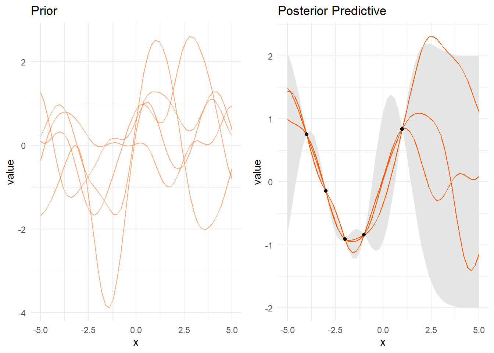

muFn = function(x){
x = sapply(x, function(x) x=0)
x
}
# The covariance function; here it is the squared exponential kernel.
# l is the horizontal scale, sigmaf is the vertical scale.
# See ?covSEiso in the gpr package for example, which is also based on Rasmussen and
# Williams Matlab code (gpml Matlab library)
Kfn = function(x, l=1, sigmaf=1){
sigmaf * exp( -(1/(2*l^2)) * as.matrix(dist(x, upper=T, diag=T)^2) )
}
#####################
### Preliminaries ###
#####################
l = 1 # for l, sigmaf, see note at covariance function
sigmaf = 1
keps = 1e-8 # see note at Kstarstar
nprior = 5 # number of prior draws
npostpred = 3 # number of posterior predictive draws
##################
### Prior plot ###
##################
# data setup
require(MASS)Le chargement a nécessité le package : MASSxg1 = seq(-5, 5, .2)
yg1 = mvrnorm(nprior,
mu = muFn(xg1),
Sigma = Kfn(xg1, l = l, sigmaf = sigmaf))
# plot prior
library(ggplot2)
library(reshape2)
# reshape data for plotting
gdat = melt(data.frame(
x = xg1,
y = t(yg1),
sd = apply(yg1, 2, sd)
), id = c('x', 'sd'))
# head(gdat) # inspect if desired
g1 = ggplot(aes(x = x, y = value), data = gdat) +
geom_line(aes(group = variable), color = '#FF5500', alpha = .5) +
labs(title = 'Prior') +
theme_minimal()
# g1
#########################################
### generate noise-less training data ###
#########################################
Xtrain = c(-4, -3, -2, -1, 1)
ytrain = sin(Xtrain)
nTrain = length(Xtrain)
Xtest = seq(-5, 5, .2)
nTest = length(Xtest)
#####################################
### generate posterior predictive ###
#####################################
# Create K, K*, and K** matrices as defined in the texts
K = Kfn(Xtrain, l=l, sigmaf=sigmaf)
K_ = Kfn(c(Xtrain, Xtest), l=l, sigmaf=sigmaf) # initial matrix
Kstar = K_[1:nTrain, (nTrain+1):ncol(K_)] # dim = N x N*
tKstar = t(Kstar) # dim = N* x N
Kstarstar = K_[(nTrain+1):nrow(K_), (nTrain+1):ncol(K_)] + keps*diag(nTest) # dim = N* x N*; the keps part is for positive definiteness
Kinv = solve(K)
# calculate posterior mean and covariance
postMu = muFn(Xtest) + t(Kstar) %*% Kinv %*% (ytrain-muFn(Xtrain))
postCov = Kstarstar - t(Kstar) %*% Kinv %*% Kstar
s2 = diag(postCov)
# R = chol(postCov)
# L = t(R) # L is used in alternative formulation below based on gaussSample.m
# generate draws from posterior predictive
y2 = data.frame(t(mvrnorm(npostpred, mu=postMu, Sigma=postCov)))
# y2 = data.frame(replicate(npostpred, postMu + L %*% rnorm(postMu))) # alternative
#################################
### Posterior predictive plot ###
#################################
# reshape data for plotting
gdat = melt(data.frame(x=Xtest, y=y2, selower=postMu-2*sqrt(s2), seupper=postMu+2*sqrt(s2)),
id=c('x', 'selower', 'seupper'))
g2 = ggplot(aes(x=x, y=value), data=gdat) +
geom_ribbon(aes(ymin=selower, ymax=seupper,group=variable), fill='gray90') +
geom_line(aes(group=variable), color='#FF5500') +
geom_point(aes(x=Xtrain, y=ytrain), data=data.frame(Xtrain, ytrain)) +
labs(title='Posterior Predictive') +
theme_minimal()
# g2
####################################################
### Plot prior and posterior predictive together ###
####################################################
library(gridExtra)
grid.arrange(g1, g2, ncol=2)